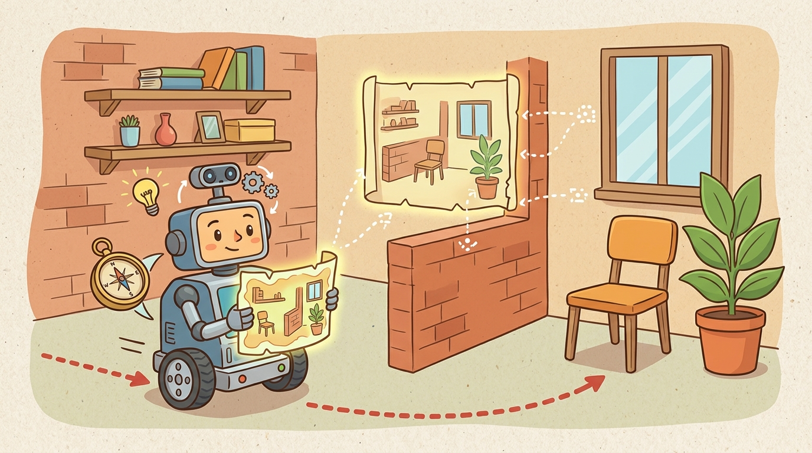

"A map is a promise that every future footstep will ask you to keep."
A Loop Closure That Came Back With Receipts

This section assumes familiarity with photometric residuals and factor-graph optimization introduced in section 29.5. The uncertainty contracts established here feed directly into section 29.7 (map uncertainty), where the covariance and unknown-fraction measures from the action gate become first-class inputs to the planner. The dense representation ideas recur in Part VII alongside scene-level planning, where Gaussian-splat maps are queried for affordances and traversability.
A robot rounds a corner, renders a photorealistic view of the hallway from its neural map, matches it against the camera feed in milliseconds, and updates its pose. Until 2021 that sentence described science fiction; systems like iMAP and MonoGS make it a laptop-runnable reality (as of 2024). Neural and Gaussian-splat SLAM replaces hand-crafted feature pipelines with learned representations that render, localize, and reconstruct simultaneously, opening dense scene understanding to any robot with a single camera. Here you will instrument a splat-SLAM loop, expose the gap between photometric quality and metric accuracy, and build the replay test that proves your map is safe to plan on.
Problem First
Classical maps are excellent for geometry, but robots increasingly need dense appearance, object affordances, and view synthesis. Neural and Gaussian-splat SLAM try to build maps that are both localizable and visually rich. A classical point-cloud SLAM system might store 50,000 sparse landmarks; a Gaussian-splat map of the same room stores 500,000 tiny ellipsoids, each encoding color and opacity, giving the robot a renderable model it can query from any viewpoint in under 10 ms.
The state can include camera poses plus a continuous scene representation. Gaussian splats store position, covariance, color, opacity, and sometimes semantic features; neural maps encode geometry and appearance in learned fields. The risk is what practitioners call the photometric quality trap: a map that renders convincingly can still carry metric drift large enough to mis-align a doorway by tens of centimeters.
Why Gaussian splats matter for embodied AI. A robot must render novel viewpoints in milliseconds to check whether a planned pose is collision-free or to re-localize after occlusion. Implicit neural fields (NeRF-style) require hundreds of forward passes per frame, exceeding the latency budget of any real-time control loop. The ellipsoidal splat is chosen because its closed-form alpha-compositing renders a full HD frame in under 10 ms on a mobile GPU, fitting within a single Nav2 control cycle. A robot that cannot render fast enough cannot close the perception-action loop under physical time constraints.
How Gaussian-splat rendering works. Each Gaussian is an oriented ellipsoid defined by a 3D mean and a 3x3 covariance matrix. To render a view, each ellipsoid is projected onto the image plane as a 2D Gaussian, sorted by depth, and alpha-composited front to back. The pixel color is the weighted sum of each splat's color (encoded as spherical harmonics for view-dependent appearance), with weights from the projected Gaussian density times opacity. Gradients flow back through the compositing to jointly optimize poses and splat parameters via photometric residuals.
Think of the scene as a bowl of soap bubbles, each tinted and semi-transparent, floating at different depths in front of you. To "see" the scene from a new angle, you flatten each bubble onto a piece of glass at your eye level, sort them nearest-first, and layer their colors one over the other, letting the closer ones partly block the ones behind. That front-to-back layering, with each bubble contributing color in proportion to how opaque and how centered it is under your line of sight, is exactly alpha-compositing. The reason the whole render takes under 10 ms is that every bubble's contribution is a closed-form Gaussian integral, not a slow iterative ray march.
A localization or mapping result is incomplete until it names the frame, timestamp, covariance or confidence, map layer, and downstream consumer. A beautiful trajectory plot with no uncertainty is not a robot interface; it is a picture.
Formal Model
The common estimator shape is a posterior over robot trajectory and map variables conditioned on controls and observations:
$$ \min_{\theta,\,x_{0:T}}\sum_{t,p}\rho\big(I_t(p)-\hat I(p;x_t,\theta)\big)+\lambda R(\theta) $$
The important part is not the notation alone. The posterior says that motion increments, landmark observations, scan matches, visual features, and loop closures are all evidence terms. The estimate is strongest when each term carries a residual, a covariance model, and a replayable source record.
- Track camera motion with geometric or photometric residuals.
- Update the dense scene representation only from well-conditioned views.
- Separate reconstruction metrics from planning metrics.
- Export collision, traversability, and uncertainty layers before using the map for action.
Worked Diagnostic
Code Fragment 1 makes the section concrete with a small numeric check. It is intentionally small, because the first debugging question is whether the estimate behaves correctly before it is hidden inside a large ROS graph or optimizer.
# Score whether a dense reconstruction is useful for action.
# Visual quality and metric consistency are kept as separate gates.
psnr_db = 29.0
pose_rmse_cm = 4.5
unknown_fraction = 0.18
passes_action_gate = psnr_db > 25 and pose_rmse_cm < 5 and unknown_fraction < 0.25
print(f"visual_quality={psnr_db} dB")
print(f"action_ready={passes_action_gate}")Expected output interpretation. The map passes because all three gates agree, not because the rendered appearance score is high by itself. If `action_ready` had flipped to `False`, the right interpretation would be that some planning-critical property, such as pose accuracy or unexplored area, is still below threshold even when the reconstruction looks visually convincing.
Tool Workflow
For mobile ground robots (Clearpath Husky, Boston Dynamics Spot) running MonoGS or SplaTAM, the practical stack is: the splat-SLAM repository for map building, Open3D for voxel-grid collision extraction at 5 cm resolution, and the ROS 2 nav2_map_server to publish the resulting occupancy layer at 10 Hz so the Nav2 planner sees a live update within one control cycle (100 ms). On a robot with a 30 W GPU budget (Jetson AGX Orin at 30 W), full-resolution Gaussian densification cannot run at tracking frequency; use a 1-in-4 keyframe decimation policy and trigger densification only on keyframes, keeping map-update latency below 250 ms. For production deployments, layer a conservative Nav2 costmap inflation radius of at least 0.35 m over the splat-derived occupancy to absorb the 40 cm worst-case drift documented in textureless corridors.
Use the hand calculation as the unit test and the library stack as the maintained implementation. The right workflow is not from-scratch forever; it is from-scratch until the invariants are visible, then production tools for scale, logging, visualization, and integration.
Replay the same bag or log with one perturbation at a time: delayed timestamps, wrong frame transform, biased wheel radius, feature dropout, repeated corridor texture, moving people, or stale map cells. If the failure label cannot distinguish sensing, association, optimization, mapping, and planning, the section is not yet debug-ready.
Consider a specific failure: in a long featureless corridor, a Gaussian-splat SLAM system such as MonoGS may render photorealistic views with PSNR above 28 dB while accumulated rotational drift quietly exceeds 5 degrees. The planner receives a visually convincing map with metric pose error large enough to mis-align a doorway by 40 cm, causing a collision. Visual reconstruction quality and metric pose accuracy are independent gates; passing one does not imply passing the other.
A warehouse robot should record odometry, IMU packets, scan or feature tracks, estimated pose, covariance, active map layer, planner cost, and recovery behavior in one replay. That single artifact lets the team ask whether a route failed because the robot was lost, the map was wrong, the planner was overconfident, or the controller could not execute the command.
Several concrete systems bracket the current capability range. iMAP (Sucar et al., 2021) was the first real-time neural implicit SLAM, encoding geometry and appearance in a single MLP updated online; it achieved roughly 5 cm ATE on small indoor scenes but slowed dramatically as scene scale grew. NICE-SLAM (Zhu et al., 2022) addressed scale by using hierarchical feature grids, reaching 1-3 cm ATE on the Replica dataset at roughly 1-2 Hz tracking speed (well below real-time). On the Gaussian side, MonoGS (Matsuki et al., 2024) runs monocular Gaussian-splat SLAM at near-real-time rates and produces renderable maps, but its pose accuracy degrades in textureless areas where photometric residuals become flat. SplaTAM (Keetha et al., 2024) adds depth sensor support, reaching sub-centimeter ATE on tabletop scenes. The pattern across all systems: photometric rendering quality and metric localization accuracy improve at different rates and with different failure modes, so they must be tested separately.
When running SplaTAM or MonoGS in large environments, set opacity_reset_interval to at least 100 iterations (the default is often 30). The aggressive default prunes low-opacity Gaussians before they have accumulated enough photometric evidence, which causes map holes in slow-moving or partially observed regions and forces expensive re-initialization during loop closure. Additionally, call torch.cuda.empty_cache() after each keyframe densification step; without it, Gaussian count growth quietly exhausts GPU memory several minutes into a run, producing a cryptic CUDA out-of-memory error that looks like an optimizer divergence rather than an allocation failure.
Language-grounded Gaussian maps (2024-2025). Systems such as LangSplat (Qin et al., 2024, CVPR) embed CLIP-encoded language features per Gaussian, enabling open-vocabulary object queries ("find the red mug") directly inside the splat map without a separate segmentation pass. Active work at ETH Zurich and CMU Robotics extends this to affordance fields so a robot can query "graspable surface" rather than a class label.
Dynamic-scene Gaussian SLAM (2024-2025). Static-world assumptions break the moment a person walks through the frame. Deformable3DGS (Yang et al., 2024) and Gaussian-SLAM with flow priors (teams at TU Munich and University of Toronto, 2024-2025) explicitly track moving Gaussians and isolate them from the static background, recovering metric accuracy in crowded indoor environments where earlier systems accumulated drift from every moving person.
Uncertainty-aware splat densification (2025-2026). Standard Gaussian densification heuristics (opacity thresholds, gradient magnitude) are open-loop and scene-agnostic. Recent work from the Active Vision Lab (Oxford) and Autonomous Robots Lab (NUS) frames densification as a Bayesian active sensing problem: the map itself signals where photometric uncertainty is highest, and the robot plans viewpoints to reduce it. This closes the loop between map quality and robot motion in a principled way.
Open problem for a PhD student. No current system provides a certified unknown-space guarantee: given a Gaussian-splat map built from N keyframes, what fraction of the navigable volume has never been observed with sufficient photometric overlap to trust the geometry? Constructing a tight, real-time computable upper bound on unobserved volume, with formal guarantees under keyframe dropout and scene change, remains an open and practically important problem for safe autonomy.
SLAM is the robot version of walking into a room and saying, "I remember this place," then checking whether the memory improves the next step instead of merely sounding confident.
Can you state the state variables, observation residual, uncertainty representation, replay artifact, and most likely field failure for neural and gaussian-splat slam? If one field is vague, the estimator is not ready for embodied use.
Neural and Gaussian-splat SLAM is production-ready only when geometry, uncertainty, timing, and action consequences are tested together.
Design a two-run replay test for this section. One run should be nominal. The other should perturb exactly one assumption, such as feature dropout, wheel slip, map aging, or delayed transforms. Report the metric, the failure label, and the action that should change.
Project Ideas
Beginner (weekend): Run SplaTAM on a short RGB-D sequence recorded with a RealSense or Kinect, then write a Python script using Open3D to extract a voxel-grid occupancy map at 5 cm resolution and visualize it alongside the ground-truth point cloud. The key challenge is separating the photometric PSNR score from the metric ATE so you can observe how they diverge on textureless surfaces.
Intermediate (1-2 weeks): Build a ROS2 node that wraps MonoGS, publishes a live nav_msgs/OccupancyGrid topic at 10 Hz, and connects to a Nav2 stack running in a PyBullet or MuJoCo simulated apartment so a differential-drive robot autonomously navigates while the splat map densifies. The key challenge is enforcing the three-gate action contract (PSNR, pose RMSE, unknown fraction) as a ROS2 service that the behavior tree must query before the planner is allowed to commit to a new goal.
What's Next?
Continue to Section 29.7: Map uncertainty, where this state-estimation contract becomes the input to the next embodied capability.
Section References
Durrant-Whyte, H. and Bailey, T. "Simultaneous Localization and Mapping." IEEE Robotics and Automation Magazine, 2006. https://ieeexplore.ieee.org/document/1638022
Classic SLAM tutorial that frames the estimation problem and the role of uncertainty.
GTSAM Project. "Factor Graphs and GTSAM." Official documentation. https://gtsam.org/
Primary tool reference for factor graphs, smoothing, pose graphs, and robotics estimation examples.
ROS 2 Navigation Project. "Nav2 documentation." Official documentation. https://navigation.ros.org/
Primary documentation for integrating localization, maps, planners, controllers, behavior trees, and recoveries.